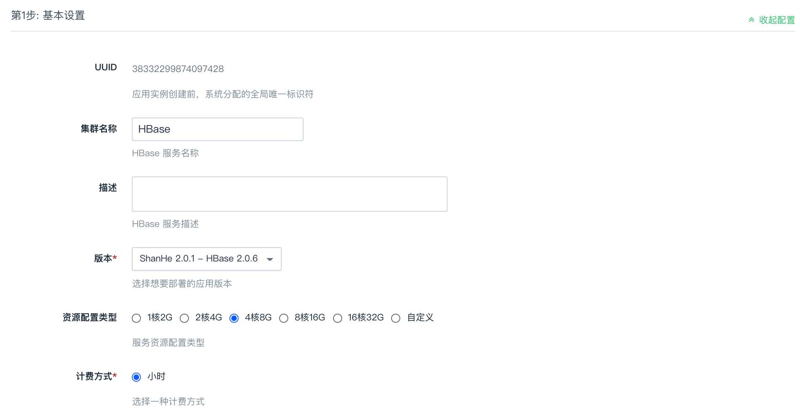
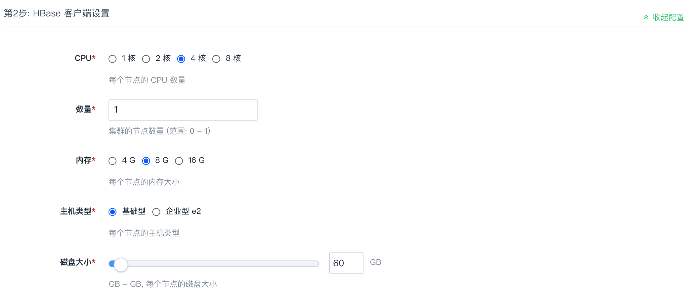
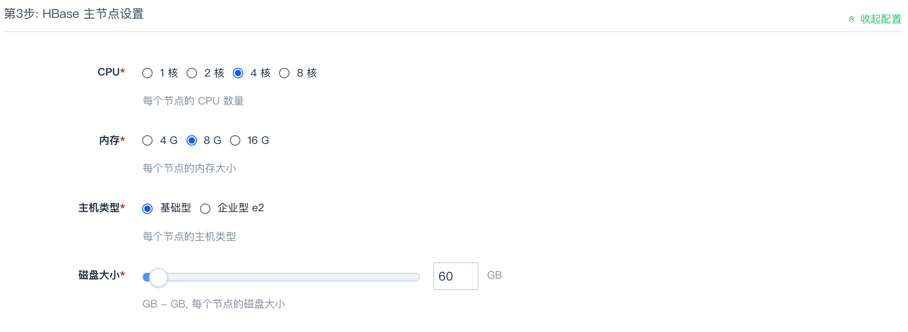
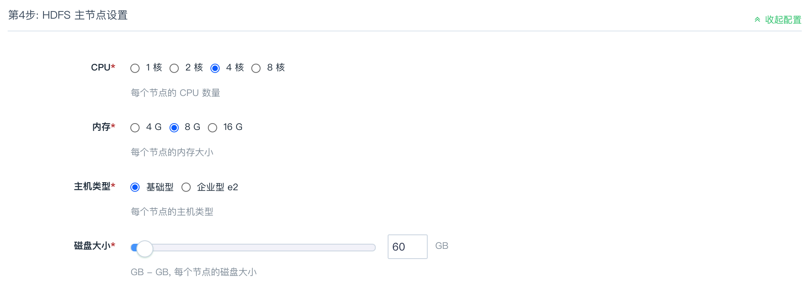
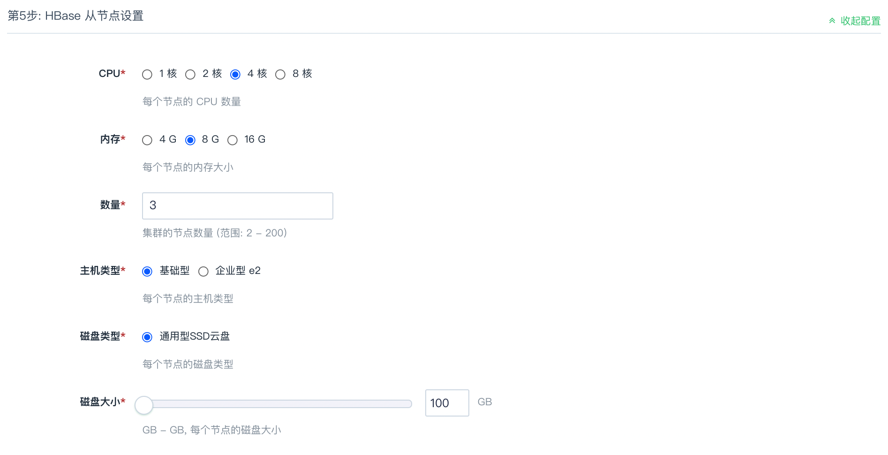
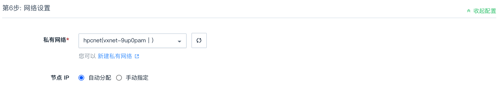

创建 HBase 集群
通过 AppCenter 集群管理控制台，您可以快速创建 HBase 集群。
本小节主要介绍如何快速创建 HBase 集群。
前提条件
- 已获取管理控制台登录账号和密码，且账号已实名认证。
- 已在网络中创建至少一个 ZooKeeper 集群。
- 已获取 HBase 集群操作权限。
操作步骤
-
登录管理控制台。
-
选择产品与服务 > 大数据服务 > 大数据服务 HBase，进入 HBase 集群管理页面。
-
点击立即部署，进入应用部署页面。
-
选择区域。 根据就近原则，选择实例所在区域。
-
配置实例基本属性、应用版本、网络信息、环境参数等信息。
a. 基本设置
b. (可选）节点设置，包括 客户端点设置、主节点设置、HDFS 主节点设置、从节点设置。
c. 网络设置
d. 依赖服务设置
e. 服务环境参数设置
f. 用户协议
-
确认配置和费用信息无误后，点击提交，创建集群。
集群创建成功后，可在集群管理页面，查看和管理 HBase 集群。
基本设置
集群名称、网络、版本、计费方式等基本信息配置。
| 参数 | 参数说明 |
|---|---|
| UUID | 系统默认分配的全局唯一标识码，不可修改。 |
| 名称 | 输入当前集群的名称。HBase |
| 描述 | （可选）对集群的简要描述。 |
| 版本 | 选择集群版本。 |
| 资源配置类型 | 选择集群节点云服务器规格。YiQiYun 1.1 版本默认需自定义各节点规格。 |
| 计费方式 | 选择集群计费方式，可选择按小时计费。 |

客户端设置（可选）
集群客户端的资源配置，包括云服务器规格、磁盘大小等。
| 参数 | 参数说明 |
|---|---|
| CPU | 选择集群节点云服务器 CPU 规格。 |
| 数量 | 选择集群节点数量。 |
| 内存 | 选择集群节点云服务器 CPU 规格。 |
| 主机类型 | 选择集群云服务器类型。 |
| 磁盘大小 | 配置集群数据和日志存储磁盘大小。磁盘大小决定了数据库最大容量以及 IOPS 能力，请根据业务量，可滑动设置或输入数字配置集群磁盘大小。 |

主节点设置（可选）
集群主节点的资源配置，包括云服务器规格、磁盘大小等。
| 参数 | 参数说明 |
|---|---|
| CPU | 选择集群节点云服务器 CPU 规格。 |
| 内存 | 选择集群节点云服务器 CPU 规格。 |
| 主机类型 | 选择集群云服务器类型。 |
| 磁盘大小 | 配置集群数据和日志存储磁盘大小。磁盘大小决定了数据库最大容量以及 IOPS 能力，请根据业务量，可滑动设置或输入数字配置集群磁盘大小。 |

HDFS 主节点设置（可选）
集群 HDFS 主节点的资源配置，包括云服务器规格、磁盘大小等。
| 参数 | 参数说明 |
|---|---|
| CPU | 选择集群节点云服务器 CPU 规格。 |
| 内存 | 选择集群节点云服务器 CPU 规格。 |
| 主机类型 | 选择集群云服务器类型。 |
| 磁盘大小 | 配置集群数据和日志存储磁盘大小。磁盘大小决定了数据库最大容量以及 IOPS 能力，请根据业务量，可滑动设置或输入数字配置集群磁盘大小。 |

从节点设置（可选）
集群从节点的资源配置，包括云服务器规格、磁盘大小等。
| 参数 | 参数说明 |
|---|---|
| CPU | 选择集群节点云服务器 CPU 规格。 |
| 数量 | 选择集群节点数量。 |
| 内存 | 选择集群节点云服务器 CPU 规格。 |
| 主机类型 | 选择集群云服务器类型。 |
| 磁盘大小 | 配置集群数据和日志存储磁盘大小。磁盘大小决定了数据库最大容量以及 IOPS 能力，请根据业务量，可滑动设置或输入数字配置集群磁盘大小。 |

网络设置
通过为集群设置独享私有网络，便于网络过滤控制，且不影响其它私有网络的设置，可确保数据库的对不同业务进行网络隔离。数据库集群仅可加入已连接路由器的私有网络，且需确保私有网络的 DHCP 处于打开状态。
| 参数 | 参数说明 |
|---|---|
| 私有网络 | 选择私有网络。 |
| 节点 IP | 配置节点 IP 地址。自动分配。手动配置需为各节点配置 IP。 |

依赖服务设置
为了保障数据安全, HBase 集群需要运行在受管私有网络中，同时由于 HBase 依赖于 ZooKeeper，所以在创建一个 HBase 集群之前，您至少需要一个路由器和一个与路由器连接的受管私有网络以及在该网络中创建一个 ZooKeeper 集群，并开启 DHCP 服务（默认开启）。
选择已有 ZooKeeper 集群。
服务环境参数设置
集群环境参数配置。
点击展开配置，可修改集群默认配置。或集群创建成功后，在集群详情页面配置参数页签修改参数。
用户协议
阅读云平台 AppCenter 用户协议，并勾选用户协议。